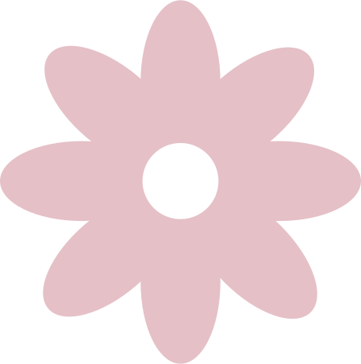
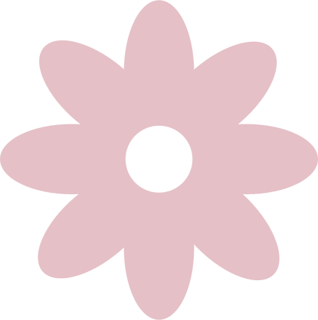
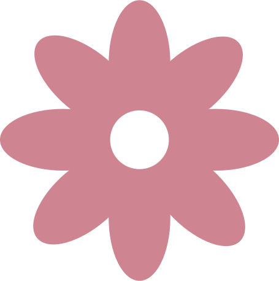
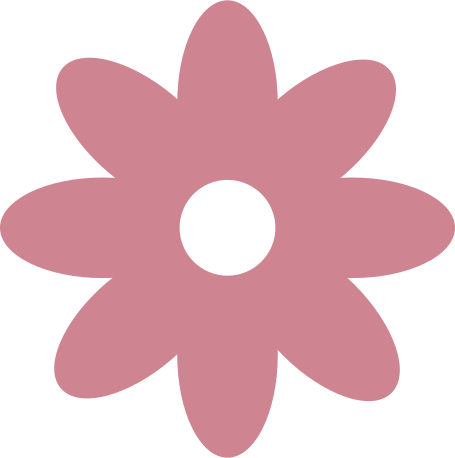
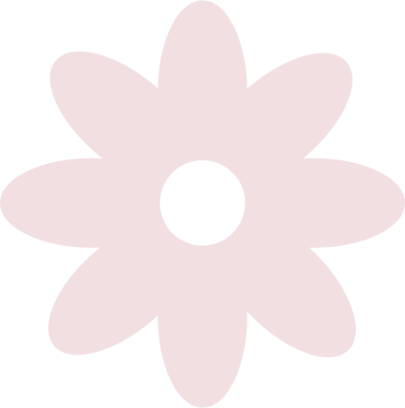
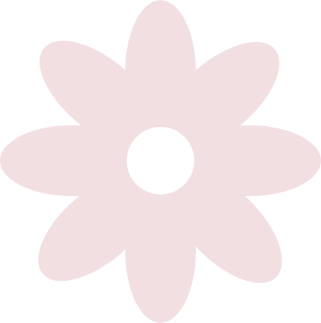

 

 



Mød Mette
Efter 20 års erfaring som blomsterdekoratør åbnede Mette Just Jørgensen, Blomsterbutikken Just på Amager. Hendes mål er at bidrage til bidrage til lokalsamfundet. Butikken, som er opkaldt efter hendes mellemnavn, Just, indebærer langt mere end bare blomster, og tilbyder også inspiration til bæredygtig indretning ved at bruge planter og genbrugsmaterialer. Her kan man blandt andet finde en fin krystaltallerken fra loppemarkedet til at stille under en urtepotte, i stedet for en nyproduceret lerunderskål. Hos Blomsterbutikken Just får du en anderledes og personlig buket, hvor hver enkelt blomst får lov til at komme til sin ret.